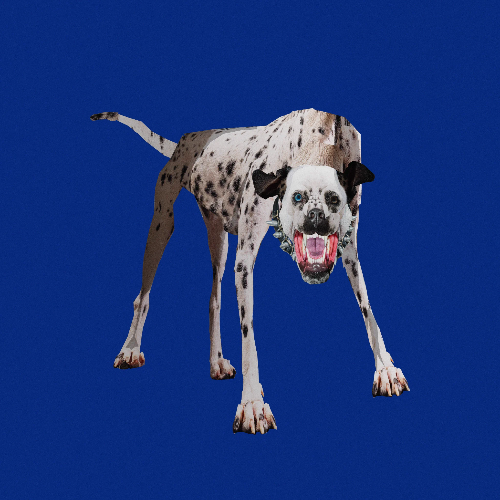

Nsqk (Rodrigo Torres) es un productor, cantante y compositor mexicano que ha revolucionado la escena del R&B, pop alternativo y trap. Con una propuesta sonora única, combina producción detallada con letras introspectivas y emocionales.
| Proyecto | Año | Género Principal |
|---|---|---|
| Botánica | 2021 | Alternative R&B / Indietronica |
| ROY | 2022 | Alternative / Electronic Pop |
| ATP | 2024 | Experimental / Trap / R&B |
Encuentra su música oficial en las siguientes plataformas:
